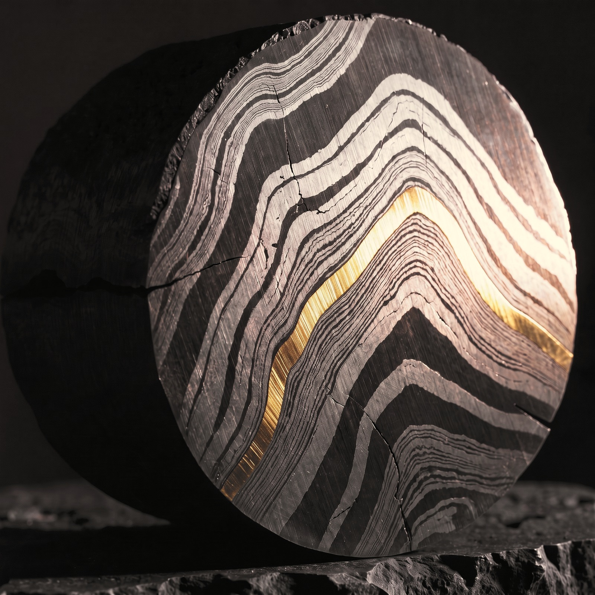

Some situations are so complex, sensitive or high-stakes that you don't know who to call. That is when you call us.
We call these Special Projects. For each one, we assemble a team of former Chairs, CEOs, Ministers and specialists from the EMIR network who have faced similar situations before.
They work in confidence, quietly, precisely and completely. When everyone around you has a stake in the outcome, you need people who have none. This is the EMIR Private Office.

What we take on.
Our work falls into five areas.
Capital and transactions
Sourcing, structuring and closing sensitive or sizeable deals with the right counterparts.
Strategy and governance
Clear direction through moments of change, and the boards and structures to see it through.
Positioning and influence
How you are seen and heard by the people who matter, from markets and media to governments.
Executive narrative and dialogue
Developing compelling narratives, shaping thought leadership and curating the conversations that move decisions.
Market entry and introductions
The right partners and the right doors, in markets where you are not yet known.
Notable special projects.
01 / 06
How to work with the Private Office.
The Private Office works for EMIR Members, by invitation only.
On rare occasions, we take on work from outside the network when the opportunity is exceptional. Every enquiry is handled in confidence and answered personally.